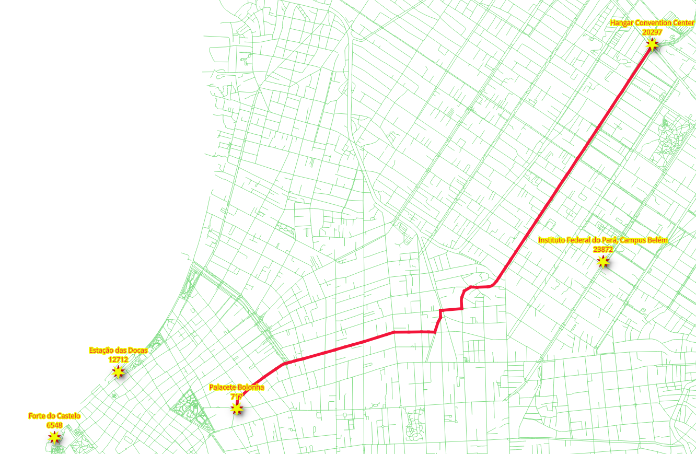

6. pl/pgsql-funktion¶
{kind=link}
Andra typer av funktioner är pl/pgsql. När applikationskraven blir mer komplexa blir det nödvändigt att använda omslag för tidigare definierade funktioner för tydlighetens skull.
6.1. Krav för routing från A till B¶
Kapitelproblem:
Skapa en funktion
wrk_fromAtoBsom tillåter routing från 2 geometrier.Funktionen tar latitud/longitudpunkter som inparametrar.
Returnerar en rutt som innehåller en geometri så att den kan visas i t.ex. QGIS.
Kommer också att returnera några andra attribut.
Den detaljerade beskrivningen:
Parametrar för inmatning
Parameter |
typ |
Beskrivning |
|---|---|---|
|
REGCLASS |
Identifierare för namn på kanttabell. |
|
NUMERISK |
Latitud för avgångspunkten. |
|
NUMERISK |
Longitud för avgångspunkten. |
|
NUMERISK |
Latitud för den punkt som är destination. |
|
NUMERISK |
Longituden för den punkt som är destination. |
|
BOOLEAN |
Flagga för att skapa en |
Utgångskolumner
Kolumn |
Beskrivning |
|---|---|
|
För beställningsändamål. |
|
Den edge-identifierare som kan användas för att JOINNA resultaten till tabellen |
|
Gatunamnet. |
|
Mellan start- och slutnod för en kant. |
|
I meter. |
|
Minuter det tar att korsa segmentet. |
|
Väggeometri med korrigerad riktningsverkan. |
För detta kapitel kommer följande punkter att användas för testning.
(lat,lon) = (-1,455829, -48,446044)
(lat,lon) = (-1,453448, -48,447142)
6.2. Tabellen Vertices¶
Grafer har en ”uppsättning kanter” och en ”uppsättning hörn” associerade till sig. Vyerna behöver sin vertices-tabell.
6.2.1. Övning 1: Skapa en tabell med hörnpunkter¶
Problem
Skapa en vertices-tabell för vyerna:
vehicle_nettaxi_netwalk_net
Lösning
Använd
pgr_extractVertices(förklaras i Diagramvyer) för att skapa tabellen med hörnpunkterJOINvertices tabellen medways_vertices(skapad i Diagramvyer) för att fåx,y,geominformation.
För vehicle_net:
SELECT * INTO vehicle_net_vertices
FROM pgr_extractVertices(
'SELECT id, source, target
FROM vehicle_net ORDER BY id');
UPDATE vehicle_net_vertices AS v
SET (x,y,geom) = (w.x, w.y, w.geom)
FROM ways_vertices AS w WHERE v.id = w.id;
För taxi_net:
SELECT * INTO taxi_net_vertices
FROM pgr_extractVertices(
'SELECT id, source, target
FROM taxi_net ORDER BY id');
UPDATE taxi_net_vertices AS v
SET (x,y,geom) = (w.x, w.y, w.geom)
FROM ways_vertices AS w WHERE v.id = w.id;
För walk_net:
Modifiera ovanstående frågor för att skapa tabellen walk_net_vertices.
SELECT * INTO walk_net_vertices
FROM pgr_extractVertices(
'SELECT id, source, target
FROM walk_net ORDER BY id');
UPDATE walk_net_vertices AS v
SET (x,y,geom) = (w.x, w.y, w.geom)
FROM ways_vertices AS w WHERE v.id = w.id;
6.2.2. Övning 3: Närmaste toppunkt¶
Problem
Beräkna (OSM)-identifieraren för det närmaste toppunktet till en punkt.
Använd i synnerhet följande (lat, lon)-värde: (-1,455829, -48,446044).
beräkna den närmaste OSM-identifieraren för vertexen till:
ways_verticesvehicle_net_verticestaxi_net_verticeswalk_net_vertices
Lösning
Kom ihåg att
idhar en OSM-vertexidentifierare på vertices-tabellerna.Använd Postgis distansoperator <-> för att beställa efter avstånd.
Hämta bara den första raden för att få den närmaste identifieraren för toppunktet.
För ways_vertices:
SELECT id
FROM ways_vertices
ORDER BY geom <-> ST_SetSRID(ST_Point(-48.446044, -1.455829), 4326)
LIMIT 1;
id
------------
4834707721
(1 row)
För vehicle_net_vertices:
Ändra den tidigare förfrågan.
1SELECT id
2FROM vehicle_net_vertices
3ORDER BY geom <-> ST_SetSRID(ST_Point(-48.446044, -1.455829), 4326)
4LIMIT 1;
id
------------
4834707721
(1 row)
För taxi_net_vertices:
Ändra den tidigare förfrågan.
id
------------
6948263223
(1 row)
För walk_net_vertices:
Ändra den tidigare förfrågan.
id
------------
4834707721
(1 row)
6.2.3. Övning 4: Funktion för närmaste toppunkt¶
Problem
När operationer ser likadana ut för olika tabeller kan en funktion skapas.
Skapa en funktion som beräknar OSM-identifieraren för det närmaste toppunktet till en punkt.
Funktionsnamn:
wrk_nearest.Behöver bara fungera för slutgiltig ansökan vyer och tabell.
Inmatningsparametrarna:
Kolumn |
typ |
Beskrivning |
|---|---|---|
vertex_table |
REGCLASS |
Identifierare för tabellnamn. |
lat |
NUMERISK |
Latitud för en punkt. |
lon |
NUMERISK |
Longituden för en punkt. |
Utdata:
typ |
Beskrivning |
|---|---|
BIGINT |
den OSM-identifierare som ligger närmast (lat,lon). |
Lösning
Funktionen returnerar endast ett
BIGINT-värde.Använda format för att bygga upp frågan.
Frågans struktur liknar Exercise 3: Nearest Vertex lösningar.
%1$Iför identifieraren av tabellnamnet.%2$soch%3$sför latitud och longitud.Punkten bildas med (lon/lat)
(%3$s, %2$s).
CREATE OR REPLACE FUNCTION wrk_Nearest(
IN vertex_table REGCLASS,
IN lat NUMERIC,
IN lon NUMERIC)
RETURNS BIGINT AS
$BODY$
DECLARE result BIGINT;
BEGIN
EXECUTE format(
$$
SELECT id
FROM %1$I
ORDER BY geom <-> ST_SetSRID(ST_Point(%3$s, %2$s), 4326)
LIMIT 1
$$,
vertex_table, lat, lon)
INTO result;
RETURN result;
END
$BODY$
LANGUAGE 'plpgsql';
6.2.4. Övning 5: Testa funktionen för närmaste toppunkt¶


Problem
Testa funktionen
wrk_Nearest.
Använd följande (lat,lon)-värden: (-1.455829, -48.446044).
Poängen är densamma som i Övning 3: Närmaste vertex problem.
Kontrollera att resultatet blir detsamma.
beräkna den närmaste OSM-identifieraren för vertexen till:
ways_verticesvehicle_net_verticestaxi_net_verticeswalk_net_vertices
Lösning
För ways_vertices:
Använd funktionen med
ways_verticessom parameter förvertex_table.Skicka (lat,lon)-värdena som andra och tredje parameter.
Om du använder funktionen på originaldata returneras inte OSM-identifieraren.
Värdet som lagras i kolumnen
idär inte OSM-identifieraren.
SELECT wrk_Nearest('ways_vertices', -1.455829, -48.446044);
wrk_nearest
-------------
4834707721
(1 row)
För vehicles_net_vertices:
Ändra den tidigare förfrågan.
SELECT wrk_Nearest('vehicle_net_vertices', -1.455829, -48.446044);
wrk_nearest
-------------
4834707721
(1 row)
För taxi_net_vertices:
Ändra den tidigare förfrågan.
wrk_nearest
-------------
6948263223
(1 row)
För walk_net_vertices:
wrk_nearest
-------------
4834707721
(1 row)
6.3. wrk_fromAtoB funktion¶
I detta avsnitt behandlas skapande och testning av den funktion som krävs.
6.3.1. Övning 6: Skapa huvudfunktionen¶
Problem
Skapa funktionen
wrk_fromAtoB.Följ beskrivningen i avsnittet Krav på rutten från A till B.
Använd specialiserade funktioner:
wrk_NearestOSMskapad på Övning 4: Närmaste vertexfunktion.Den tar emot punkten i naturligt språkformat.
Erhåller den OSM-identifierare som behövs av
wrk_dijkstra.
wrk_dijkstraskapad i SQL-funktion
Lösning
Funktionens signatur:
Inmatningsparametrarna markeras.
Utdatakolumnerna är inte markerade.
Funktionen returnerar en uppsättning värden.
CREATE OR REPLACE FUNCTION wrk_fromAtoB(
IN edges_subset REGCLASS,
IN lat1 NUMERIC, IN lon1 NUMERIC,
IN lat2 NUMERIC, IN lon2 NUMERIC,
IN do_debug BOOLEAN DEFAULT false,
OUT seq INTEGER,
OUT id BIGINT,
OUT seconds FLOAT,
OUT name TEXT,
OUT length_m FLOAT,
OUT route_readable TEXT,
OUT route_geom geometry,
OUT azimuth FLOAT
)
RETURNS SETOF record AS
Funktionens kropp:
Anrop till funktionen wrk_dijkstra
Använda PostgreSQL
formatför att göra utbytenDen första parametern är den sträng som ska ersättas
Resten är dataparametrarna, det är strängarna som används för ersättning.
wrk_dijkstraerhåller värdena för utdataVärdet
edges_subsetkommer att ersätta%1$I:För
sourceochtarget:wrk_Nearestanvänds för att hitta identifieraren.Tabellnamnet för vertices bildas med
%1$I_vertices.
värdena
lat1,lon1kommer att ersätta%2$s, %3$srespektive.värdena
lat2,lon2kommer att ersätta%4$s, %5$srespektive.
Att få den konstruerade frågan i form av en varning:
WARNINGkommer endast att utfärdas närdo_debugär sant.Ingen utdata kommer att genereras.
$BODY$
DECLARE
final_query TEXT;
BEGIN
final_query := format(
$$
SELECT *
FROM wrk_dijkstra(
'%1$I',
(SELECT wrk_Nearest('%1$I_vertices', %2$s, %3$s)),
(SELECT wrk_Nearest('%1$I_vertices', %4$s, %5$s))
)
$$,
-- Subtitutions on the query are in order
edges_subset, lat1, lon1, lat2, lon2);
IF do_debug THEN
RAISE NOTICE '%', final_query;
RETURN;
END IF;
RETURN QUERY EXECUTE final_query;
END;
$BODY$
LANGUAGE 'plpgsql';
CREATE OR REPLACE FUNCTION wrk_fromAtoB(
IN edges_subset REGCLASS,
IN lat1 NUMERIC, IN lon1 NUMERIC,
IN lat2 NUMERIC, IN lon2 NUMERIC,
IN do_debug BOOLEAN DEFAULT false,
OUT seq INTEGER,
OUT id BIGINT,
OUT seconds FLOAT,
OUT name TEXT,
OUT length_m FLOAT,
OUT route_readable TEXT,
OUT route_geom geometry,
OUT azimuth FLOAT
)
RETURNS SETOF record AS
-- signature ends
$BODY$
DECLARE
final_query TEXT;
BEGIN
final_query := format(
$$
SELECT *
FROM wrk_dijkstra(
'%1$I',
(SELECT wrk_Nearest('%1$I_vertices', %2$s, %3$s)),
(SELECT wrk_Nearest('%1$I_vertices', %4$s, %5$s))
)
$$,
-- Subtitutions on the query are in order
edges_subset, lat1, lon1, lat2, lon2);
IF do_debug THEN
RAISE NOTICE '%', final_query;
RETURN;
END IF;
RETURN QUERY EXECUTE final_query;
END;
$BODY$
LANGUAGE 'plpgsql';
6.3.2. Övning 7: Använda huvudfunktionen¶

Problem
Använd wrk_fromAtoB
Avgångspunkten är: (lat,lon) =
(-1.455829, -48.446044)Destinationspunkten är: (lat,lon) =
(-1,453448, -48,447142)För
vehicle_net:Används med standardvärdet för
do_debug.
För
taxi_net:Använd med
do_debugsatt tilltrue.
För
walk_net:Används med standardvärdet för
do_debug.Spara resultaten i en tabell.
Visa innehållsförteckningen.
Observera
Funktionen är inte avsedd att användas med ways
Lösning
För vehicle_net:
Den första parametern är tabellnamnet.
De två följande parametrarna är latitud och longitud för avgångspunkten.
De två följande parametrarna är latitud och longitud för destinationspunkten.
SELECT DISTINCT name
FROM wrk_fromAtoB(
'vehicle_net',
-1.455829, -48.446044,
-1.453448, -48.447142);
name
-------------------
Rua Nova
Passagem São Luis
(3 rows)
För taxi_net:
Gör en testkörning genom att lägga till
trueför att få den fråga som körs.
SELECT *
FROM wrk_fromAtoB(
'taxi_net',
-1.455829, -48.446044,
-1.453448, -48.447142,
true);
seq | id | seconds | name | length_m | route_readable | route_geom | azimuth
-----+----+---------+------+----------+----------------+------------+---------
(0 rows)
För walk_net:
SELECT *
INTO example
FROM wrk_fromAtoB(
'walk_net',
-1.455829, -48.446044,
-1.453448, -48.447142);
SELECT * FROM example;
SELECT 5
seq | id | seconds | name | length_m | route_readable | route_geom | azimuth
-----+-------+-------------------+-------------------+--------------------+--------------------------------------------------------------------------------------------------------------------------------+--------------------------------------------------------------------------------------------------------------------------------------------------------------------------------------------+--------------------
1 | 16167 | 2.861427813328004 | Passagem São Luis | 39.74205296288895 | LINESTRING(-48.4460365 -1.4557156,-48.4460753 -1.4557343,-48.4461357 -1.4557464,-48.4462825 -1.4557638,-48.4463871 -1.4557591) | 0102000020E61000000500000041295AB9173948C0AA6EE4709C4AF7BFD586D4FE183948C0B2A5A20CB04AF7BFFE8980F91A3948C0D550B4BCBC4AF7BF7923F3C81F3948C001367BFBCE4AF7BF9BED6536233948C099ABD50DCA4AF7BF | 262.9272846676941
2 | 20152 | 5.582554669153525 | Passagem São Luis | 77.53548151602118 | LINESTRING(-48.4463871 -1.4557591,-48.4464837 -1.455735,-48.4466674 -1.4556928,-48.447061 -1.4555817) | 0102000020E6100000040000009BED6536233948C099ABD50DCA4AF7BF3AD9BC60263948C0ED478AC8B04AF7BF3D98B9652C3948C0DA5C9088844AF7BF95287B4B393948C0517F6209104AF7BF | 284.7481662181404
3 | 20176 | 7.240785806093086 | Rua Nova | 100.56646952907064 | LINESTRING(-48.447061 -1.4555817,-48.4470423 -1.454802,-48.4470462 -1.4546725) | 0102000020E61000000300000095287B4B393948C0517F6209104AF7BFDD369DAE383948C07C7C4276DE46F7BF8A6654CF383948C0BC3FDEAB5646F7BF | 0.9325810062371391
4 | 3140 | 8.585486262069729 | Rua Nova | 119.24286475096845 | LINESTRING(-48.4470462 -1.4546725,-48.4470845 -1.4535948) | 0102000020E6100000020000008A6654CF383948C0BC3FDEAB5646F7BF36069D103A3948C0AB2BFA9EEC41F7BF | 357.964642104661
5 | -1 | 0 | | | | |
(5 rows)